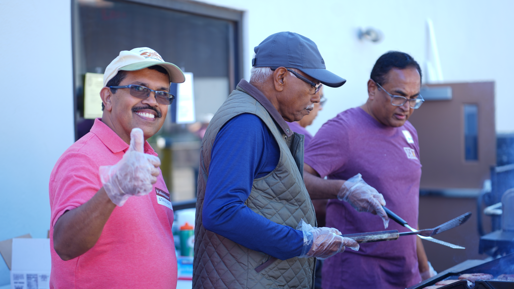

Message Library
Recent Sermons
Powerful messages to encourage and equip your faith all week long.

Series: Rooted & Rising
Standing Firm in Uncertain Times

Series: New Season
When God Opens a Door

Series: Rooted & Rising
The Power of a Surrendered Life

Series: Faith Foundations
Building on the Rock

Series: New Season
The Courage to Step Forward

Special Service
Easter Sunday: He is Risen